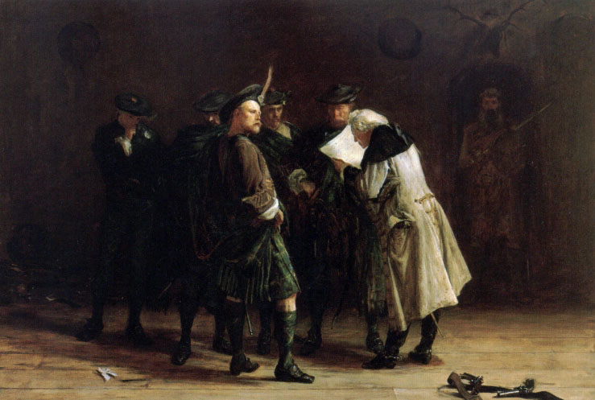

Ye Jacobites by Name
"Post-Jacobitism"
Text rewritten by Robert Burns, followed by the anonymous original text (1746)
Scots Musical Museum Volume IV song 371, page 383 (c. 1790)
Tune 1 (Banjo)
Tune 2 (Pipes)
"Captain Kidd's Farewell to the Seas"
Melodies -brilliantly- sequenced by Barry Taylor

|
To the lyrics:
Though Hoggs intention was to include only contemporary songs in his "Jacobite relics" the present song is also found in this collection, first volume under N°34. He did so as a consequence of imperfect information. He could not know that this song that he got from the "Museum" was essentially the work of Burns. (Concerning these curious editing methods, see article "Hogg" ). |
A propos du texte:
Bien que l'intention de Hogg ait été de n'accueillir que des chants contemporains des événements , on trouve le présent chant également dans son recueil, volume 1, sous le n° 34. C'était en l'occurrence par manque d'information, car rien n'indique dans le "Musée" où il a puisé que l'essentiel du chant est de Burns. (A propos de ses méthodes d'édition, cf. article "Hogg" ). |
|
To the tune:
The tune is a good English specimen inserted in - D'Urfey's "Pills to purge Melancholy", 1719, volume vi, n° 251, with a song beginning: "A young man and a maid...." - Shortly after the execution of the famous Captain William Kidd (1645 - 1701), five broadsides appeared. One was to live on and popularize the common belief that Kidd had confessed guilty to the false charges brought against him. It is a long ballad, titled " Captain Kidd's Farewell to the Seas ", and evidently sung to the same tune: My name is Captain Kid, who has sailed, who has sailed, My name is Captain Kid, who has sailed. My name is Captain Kid; What the laws did still forbid Unluckily I did, while I sailed. - Stenhouse in his comments to the "Museum" (1792) quotes the title of a more recent song, also about a "pirate": "You've all heard of Paul Jones Have you not, have you not?" sung to the melody in the eighteenth century in Edinburgh. The fame of Paul Jones was extended by means of songs and broadsides from Seven Dials and elsewhere, after the "buccaneer"'s exploits off the East coast of Scotland in 1779. - In one of his manuscripts Burns quotes an alternative title of the tune "Up black-nebs a'" , evidently as belonging to a song now unknown. Source: Complete Songs of Robert Burns On line Book (cf. links) |
A propos de la mélodie:
Cet air est un bon exemple de mélodie anglaise qui figure parmi les - "Pilules pour purger la mélancolie", 1719, vi. 251, de Thomas D'Urfé (1653 - 1723) accompagnant une chanson qui commence ainsi: "Un jeune homme, une fille...." - Peu après l'exécution du fameux Capitaine William Kidd (1645 - 1701), cinq "broadsides" furent publiées. L'une d'entre elles est encore chantée, perpétuant l'idée reçue qu'il avait avoué les crimes dont on l'accusait à tort. Il s'agit d'une longue ballade intitulée "L'Adieu à la mer du Capitaine Kidd" , qui se chante à l'évidence sur ce même air: Mon nom est William Kidd, Le marin, le marin. Mon nom est William Kidd, le marin. Mon nom est William Kidd Ce que la loi interdit Pour mon malheur, je le fis, sur la mer. - Stenhouse, collaborateur au "Musée" (1792), parle d'une chanson "Connaissez-vous Paul Jones Oui, le connaissez-vous?" que l'on chantait sur cette mélodie, au 18ème siècle, à Edimbourg. La renommée de John Paul Jones se répandait partout grâce aux chansons et aux feuilles volantes imprimées à Seven Dials (quartier populaire de Londres) et ailleurs, depuis l'exploit accompli par ce "pirate" sur la côte est de l'Ecosse en 1779. - Sur l'un de ses manuscrits, Burns cite un autre titre pour cet air: "Truites, sortez de l'eau!" , correspondant à une chanson aujourd'hui oubliée. Source: Complete Songs of Robert Burns On line Book (cf. liens) |

|
1. Ye Jacobites by name, lend an ear, give an ear!
Ye Jacobites by name, lend an ear, Ye Jacobites by name, Your fautes I will proclaim, Your doctrines I maun blame - you shall hear!
2. What is Right, and what is wrang, by the law, by the law?
3. What makes heroic strife, famed afar, famed afar?
4. Then let your schemes alone, in the State, in the State!
|
1. Vous autres, Jacobites, écoutez, écoutez!
Vous autres, Jacobites, écoutez! Vous autres Jacobites, Je veux dire les défauts, Qui entachent vos doctrines, écoutez!
2. Qu'est-ce donc qui décide du bon droit, du bon droit?
3. Que sont donc vos faits d'armes si fameux, si fameux?
4. Que cessent les complots contre l'Etat, oui l'Etat!
(Trad. Ch.Souchon (c) 2003) |
|
This is one of the few tunes of this collection condemning the Jacobite cause.
Is it really so? This text was (re-)written by Burns who was admittedly a convinced Jacobite and the last sentence sung by the Whig "Leave a man undone to his fate", does not make him a very likeable person.
As cleverly stated in the comment to this song in the
scanned edition of the "Scots Musical Museum"
published by the National Burns Collection:
Someone submitted this interesting idea to the « Mudcat Discussion Forum” (see links):
|
Il s'agit, apparemment d'un des rares chants de ce recueil condamnant la cause Jacobite.
L'est-il vraiment? Ce texte est de Burns qui est considéré comme un Jacobite convaincu et la dernière phrase qu'il met dans la bouche du Whig, "Abandonnez un vaincu à son sort", n'en font pas un personnage très attachant. Un commentaire très judicieux sur ce chant figure dans l'édition scannée du "Musée Musical écossais" publié par la "National Burns Collection" Le mot "fautes" (traduit ici par "défauts") peut signifier manquements, tares, carences ou points faibles. Une telle ambiguïté peut tout à fait être intentionnelle. Bien qu'il s'agisse ici à l'origine d'un chant anti-Jacobite datant de 1746, l'ambiguïté de langage fait qu'on est bien en peine de démêler ce que Burns lors de cette réécriture a voulu mettre à propos des malheureux Stuart. Il avait charge de famille et, comme tout un chacun à l'époque, il devait se montrer prudent sur tout ce qui touchait la politique et la religion. C'est pourquoi il s'astreignait (presque!) toujours à déguiser les sympathies qui transpiraient chez lui pour "le roi au-delà des mers". Toutefois l'essayiste Bill Watkins (2000) affirme qu'ici "Burns met une puissante sourdine à ses propos jusqu'à en faire une condamnation de la guerre en général, plutôt qu'un credo politique.' Burns éprouvait un malin plaisir à exploiter la schizophrénie écossaise où cohabitent calvinisme Whig et romantisme Jacobite et tire malicieusement parti de ces composantes opposées pour nourrir sa créativité."
Quelqu’un soumit cette idée intéressante au “Mudcat Discussion Forum” (voir liens):
|
|
YE JACOBITES BY NAME
Out of the
Chapbook
"The Battle of
Falkirk
Garland"
To the Tune of, Captain Kid.
|
VOUS QU'ON NOMME JACOBITES
Extrait du
"chapbook"
"Guirlande pour la bataille de
Falkirk
"
Sur l'air de "Capitaine Kid"
1. Vous qu'on nomme Jacobites, écoutez, écoutez!
|
|
The comparison of this clearly anti-Jacobite song with Burns's version prompts some readers to see in the latter an incitement for Jacobites
"to move on from a divisive past, and unite for the future." (Mr McGrath of Harlow -PM of Mudcat Discussion Forum).
Another Member, An Buachaill Caol Dubh, has quite a different view of the question and writes:
|
La comparaison de ce chant résolument anti-Jacobite avec la version de Burns conduit certains à voir dans cette dernière un incitation, à l'adresse des Jacobites,
"à dépasser les anciennes divisions et à s'unir pour l'avenir"
(M.McGrath of Harlow -membre permanent du " Mudcat Discussion Forum").
Un autre membre du Forum, défend un autre point de vue sur cette question. Il écrit:
|
Americans by Name
Sung by the author Shaman Starseed|
Robert burns's poem inspired the Celtic singer and musician
Shaman Starseed
with this "Americans by name" where the Jacobite schemes are replaced with the "Operation Northwoods plan" by which the military lobbies, backed by the mass media, framed the American nation into ungodly wars. JFK who opposed them was shot. The same nefarious plotters have a hand in the 9-11 attack on the "three towers".
Did they also close the You Tube video "Americans by name" that no longer works and had to be replaced by "Jenny Cameron Reel"? |
Le poème de Robert Burns inspira au chanteur-compositeur et musicien celtique
Shaman Starseed
cet "Americans by name" où les menées Jacobites sont remplacées par le plan "Opération Northwood" ourdi par les groupes d'intérêt militaires avec le soutien des médias, afin de dévoyer la nation américaine dans des guerres impies. JFK qui s'y opposa fut assassiné. Les mêmes abominables conjurés sont derrière les attentats du 11 septembre 2001 contre les "Trois tours
. Ont ils également fermé la vidéo You-Tube "Americans by name" qui a dû être remplacé par "Jenny Cameron Reel"? |